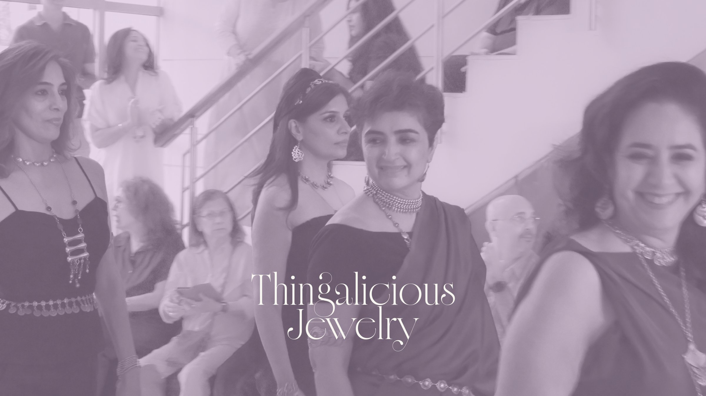
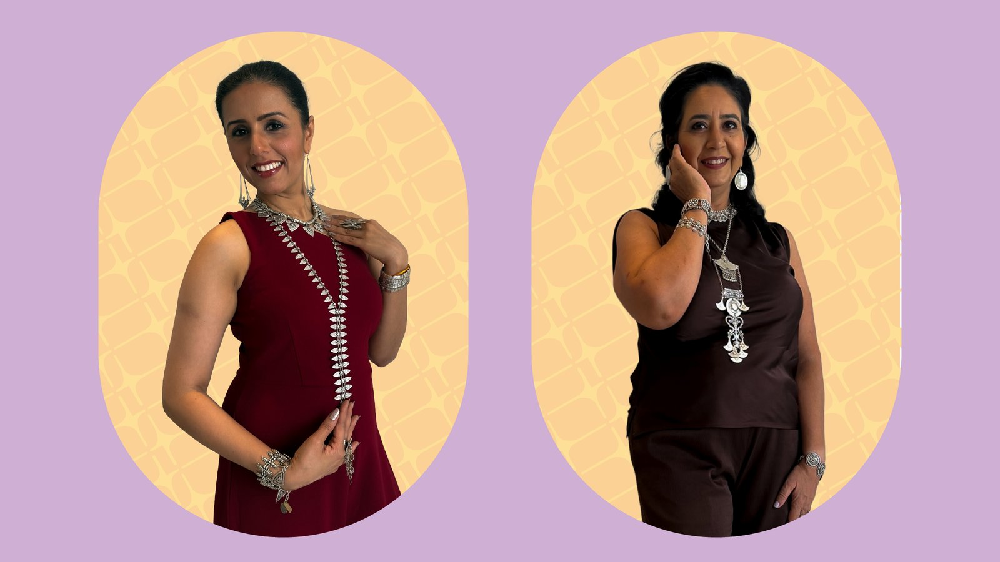
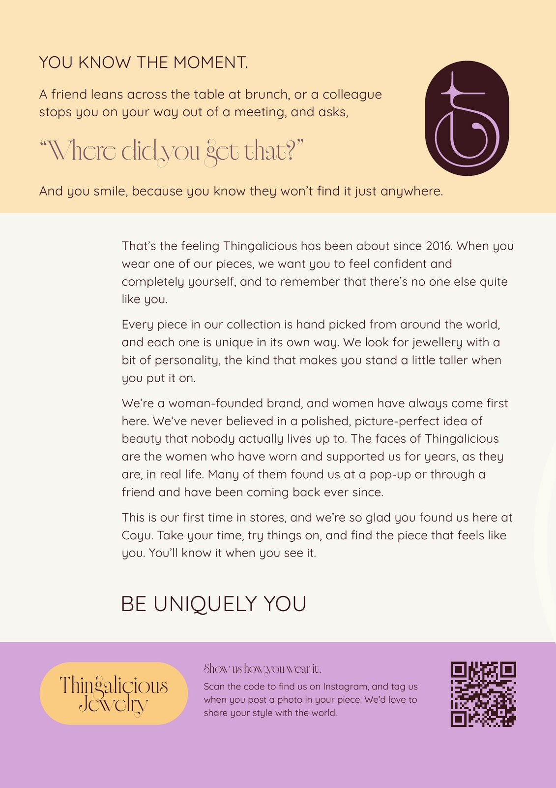
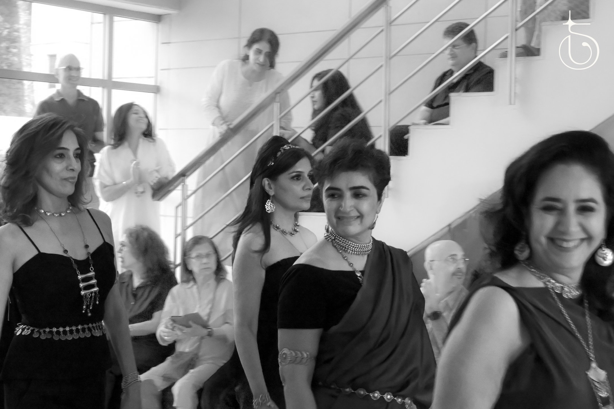

Thingalicious
Thingalicious is a curated fashion jewelry brand, and I lead its creative direction across every place it appears, online and offline.
- Year
- 2026
- Context
- Client work
- Role
- Creative director

/ Problem
Thingalicious had distinctive pieces, but the brand itself was hard to recognize. Its identity was created in 2016 around an "earthy chic" look, built for online and in-person sales. The jewelry had been worn by hundreds and spotted in magazines and at fashion events, but nothing tied the brand together visually. In 2026 it was coming back after a short hiatus and needed an identity that could work across every touchpoint.
/ Decision 01
Positioning.
The target market is mid-to-high market Indian women looking for everyday fashion jewelry, not wedding jewelry. The brand is woman-founded and puts women first, so it uses no models. Its faces are the customers who have worn and supported it for years. Every piece is hand-picked from makers around the world, and the tagline, Be Uniquely You, puts individuality at the center of the positioning.


/ Decision 02
Identity.
The color palette was pulled from sunset imagery that was meaningful to the founder. The logomark was built by deconstructing and rearranging the letterforms of the typeface until it resembled an earring, since jewelry is the brand's focus.


/ Decision 03
Packaging.
The brand's previous packaging was simple kraft paper boxes. I wanted to elevate it with a more architectural box and some embossing. The rounded rectangle the logo sits in worked well as a packaging shape too, so I combined the materials and mocked up the packaging in Maya.

/ Final work
I then applied the brand assets across marketing materials as needed.



/ After launch
After the rebrand, I extended the system into a lookbook, a 362-product catalog, product tags and labels, and in-store displays for the brand's first retail stockist, across a few locations. I'm now redesigning the Shopify store.
/ Outcomes
Thingalicious moved from online sales and pop-ups into retail for the first time, and was featured at a fashion show in August 2026.

- Context
- Client work, ongoing since 2026
- Skills
- Creative directionbrand identitylogo designpackaging design3D modellinglabellingsocial mediaretail graphicscatalog designe-commerce
- Role
- Creative director for how the brand appears online and offline